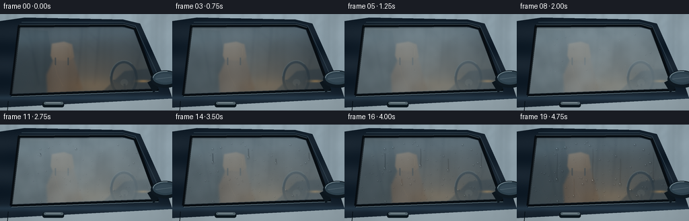
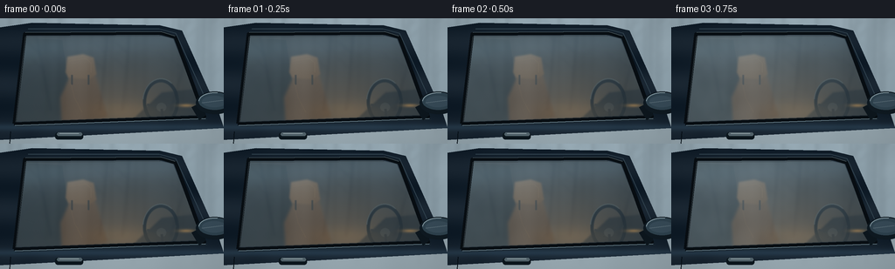

CODING AGENTS AS PIXEL WORLD MODELS
traex/GPT-6.1-Sol · phygen_102
点击播放 · 原生 RGB 像素
逐轮保存的候选
回放视频、检查图与代码变化。
每份候选均可单独播放。实际图片检查记录在下方工具轨迹中。
候选 01播放与检查图
点击播放 · 原生 RGB 像素


展开代码变化
--- 上一保存版本
+++ 本次保存版本
@@ -0,0 +1,232 @@
+"""Procedural RGB timelapse: cold fog encountering a warm car side window.
+All geometry, textures, optics, and water movement are generated locally.
+"""
+from pathlib import Path
+import math
+import numpy as np
+from PIL import Image, ImageDraw, ImageFilter
+from artifact_io import save
+
+ROOT = Path(__file__).resolve().parent
+W, H, S = 256, 144, 3
+w, h = W*S, H*S
+Y, X = np.mgrid[0:h, 0:w].astype(np.float32) / S
+rng = np.random.default_rng(1042)
+
+def mask_poly(points):
+ im = Image.new('L', (w,h))
+ ImageDraw.Draw(im).polygon([(int(x*S),int(y*S)) for x,y in points], fill=255)
+ return np.asarray(im,dtype=np.float32)/255
+
+def blurred(a, radius):
+ im=Image.fromarray(np.uint8(np.clip(a,0,1)*255))
+ return np.asarray(im.filter(ImageFilter.GaussianBlur(radius*S)),dtype=np.float32)/255
+
+def noise_grid(nx,ny,seed):
+ r = np.random.default_rng(seed)
+ im=Image.fromarray(np.uint8(r.random((ny,nx))*255))
+ return np.asarray(im.resize((w,h),Image.Resampling.BICUBIC),dtype=np.float32)/255
+
+n1=noise_grid(11,7,3)
+n2=noise_grid(29,18,31)
+fine=rng.normal(0,1,(h,w)).astype(np.float32)
+
+def ellipse_mask(cx,cy,rx,ry):
+ return np.clip((1-((X-cx)/rx)**2-((Y-cy)/ry)**2)*15,0,1)
+
+def layer(a, color, mask):
+ return a*(1-mask[...,None])+np.asarray(color,dtype=np.float32)*mask[...,None]
+
+# A winter woodland beyond the stationary car, made deliberately out of focus.
+bg=np.empty((h,w,3),np.float32)
+bg[:]=[157,177,188]
+bg += (8*(n1-.5)-.17*Y)[...,None]
+trees=Image.new('RGBA',(w,h),(0,0,0,0)); d=ImageDraw.Draw(trees)
+r=np.random.default_rng(54)
+for i in range(30):
+ xx=r.uniform(-10,275); bottom=r.uniform(85,140); top=r.uniform(-40,25)
+ thick=r.uniform(.6,2.3)
+ d.line([(xx*S,bottom*S),((xx+2)*S,top*S)],fill=(50,68,78,110),width=max(1,int(thick*S)))
+ for j in range(7):
+ yy=r.uniform(0,70); length=r.uniform(6,22); side=r.choice([-1,1])
+ d.line([(xx*S,yy*S),((xx+side*length)*S,(yy-length*.9)*S)],fill=(68,82,90,70),width=max(1,int(thick*S*.45)))
+trees=trees.filter(ImageFilter.GaussianBlur(2.1*S)); t=np.asarray(trees,dtype=np.float32)
+bg=layer(bg,t[:,:,:3],t[:,:,3]/255*.48)
+snow=blurred(mask_poly([(-5,116),(42,107),(113,115),(191,103),(261,107),(261,150),(-5,150)]),4)
+bg=layer(bg,[164,178,184],snow*.55)
+
+# The upper door silhouette and the uninterrupted window opening.
+outer=mask_poly([(-12,12),(37,5),(183,8),(208,14),(250,108),(256,126),(-9,140)])
+glass=mask_poly([(29,20),(181,19),(198,23),(233,111),(18,119)])
+window_inner=blurred(glass, .45)
+body=np.empty_like(bg)
+body[:]=[18,31,43]
+body += (6*np.sin((Y-114)/8)+4*n1)[...,None]
+body += np.exp(-((Y-125)/4)**2)[...,None]*np.array([11,17,21])
+base=layer(bg,body,outer)
+
+# Sculpted cabin, seen through the blue-tinted warm pane.
+cabin=np.empty_like(bg); cabin[:]=[29,34,35]
+cabin += (np.exp(-((X-130)/85)**2-((Y-101)/45)**2)*.9)[...,None]*np.array([47,28,11])
+# Dark rear interior and satin leather seat.
+rear=mask_poly([(30,22),(71,25),(85,120),(18,120)])
+cabin=layer(cabin,[22,29,31],rear*.8)
+seat_back=blurred(mask_poly([(82,62),(108,62),(123,113),(71,126),(69,91)]),1.6)
+seat_col=np.empty_like(bg); seat_col[:]=[74,54,36]
+seat_col+=(10*np.exp(-((X-88)/12)**2)-.12*(Y-60))[...,None]
+cabin=layer(cabin,seat_col,seat_back)
+headrest=blurred(mask_poly([(77,44),(95,41),(107,45),(110,64),(102,70),(78,68),(75,62)]),1)
+head_col=np.empty_like(bg); head_col[:]=[95,71,48]
+head_col += (6*np.cos((X-86)/8)-.27*(Y-45))[...,None]
+cabin=layer(cabin,head_col,headrest)
+# Seat stitching and the narrow supports.
+ci=Image.fromarray(np.uint8(np.clip(cabin,0,255))); cd=ImageDraw.Draw(ci)
+for xx in (82,101): cd.line([(xx*S,65*S),(xx*S,76*S)], fill=(39,36,31),width=2*S)
+cd.line([(79*S,49*S),(98*S,46*S),(104*S,51*S),(104*S,62*S)],fill=(111,83,54),width=1)
+cd.line([(81*S,75*S),(85*S,91*S),(94*S,108*S)],fill=(96,71,45),width=1)
+cabin=np.asarray(ci,dtype=np.float32)
+# Dashboard and realistic elliptical steering wheel glimpsed through the window.
+dash=blurred(mask_poly([(185,85),(223,81),(244,111),(209,117),(151,118),(157,111)]),1)
+cabin=layer(cabin,[26,29,29],dash)
+wheel_outer=ellipse_mask(184,96,21,27)
+wheel_inner=ellipse_mask(184,96,17.2,23)
+wheel=np.clip(wheel_outer-wheel_inner,0,1)
+cabin=layer(cabin,[13,19,22],wheel)
+# A thin highlight on the round wheel and its spokes.
+ci=Image.fromarray(np.uint8(np.clip(cabin,0,255))); cd=ImageDraw.Draw(ci)
+cd.arc([163*S,69*S,205*S,123*S],187,307,fill=(60,66,64),width=1*S)
+cd.line([(168*S,99*S),(184*S,103*S),(201*S,94*S)],fill=(25,29,30),width=3*S)
+cd.ellipse([179*S,97*S,190*S,107*S],fill=(38,41,40))
+cd.line([(185*S,104*S),(186*S,119*S)],fill=(21,25,27),width=3*S)
+cabin=np.asarray(ci.filter(ImageFilter.GaussianBlur(.38*S)),dtype=np.float32)
+# Amber heater/cabin light, restrained against the colder exterior reflections.
+light=np.exp(-((X-144)/45)**2-((Y-108)/13)**2)
+cabin += light[...,None]*np.array([28,16,3])
+cabin += (np.exp(-((X-213)/9)**2-((Y-100)/2)**2))[...,None]*np.array([95,58,15])
+# Fresnel sky reflection, distant tree reflections, blue tint and warm transmission.
+skyref=.22+.12*np.exp(-((Y-28)/38)**2)
+clean=cabin*(1-skyref[...,None])+bg*skyref[...,None]
+clean+=np.array([0,3,6])
+reflection_im=Image.new('L',(w,h)); rd=ImageDraw.Draw(reflection_im)
+for x0,x1 in [(41,58),(123,114),(148,140),(220,195)]:
+ rd.line([(x0*S,18*S),(x1*S,106*S)],fill=95,width=2*S)
+ for yy in [25,40,58]:
+ x=x0+(x1-x0)*(yy-18)/88
+ rd.line([(x*S,yy*S),((x-13)*S,(yy-12)*S)],fill=70,width=1*S)
+reflect=blurred(np.asarray(reflection_im,dtype=np.float32)/255,1.5)
+clean-=reflect[...,None]*np.array([17,16,13])
+clean+=np.exp(-((Y-(37-.07*X))/15)**2)[...,None]*np.array([8,12,15])
+
+# Water nucleation sites. Small fixed beads grow before a few become mobile.
+r=np.random.default_rng(838)
+drops=[]
+for i in range(280):
+ x=r.uniform(24,225); y=r.uniform(25,116)
+ if glass[min(h-1,int(y*S)), min(w-1,int(x*S))]<.5: continue
+ rad=r.uniform(.24,.63) if i<175 else r.uniform(.65,1.55)
+ if i>264: rad=r.uniform(1.7,2.5)
+ drops.append((x,y,rad,r.uniform(.06,.46),r.uniform(.1,.9)))
+# Larger coalesced droplets leave vertical transparent rivulets.
+runners=[(60,43,2.1,.49,40),(113,36,2.35,.55,49),(154,51,2.0,.62,39),(203,42,1.85,.57,42),(85,81,1.7,.70,26)]
+
+# Rubber gasket and brushed trim remain foreground and dry.
+trimim=Image.new('RGBA',(w,h)); td=ImageDraw.Draw(trimim)
+def line(points,fill,width):
+ td.line([(int(x*S),int(y*S)) for x,y in points],fill=fill,width=max(1,int(width*S)),joint='curve')
+line([(16,121),(234,113),(201,22),(185,17),(28,18),(16,121)],(8,14,19,255),4.3)
+line([(17,123),(235,115)],(116,139,150,255),1.3)
+line([(19,124),(237,116)],(29,42,50,255),1)
+line([(29,16),(184,15),(200,20)],(113,133,139,255),.7)
+line([(32,12),(182,12),(201,17),(243,110)],(51,69,81,255),1.1)
+line([(18,119),(29,21),(183,20)],(52,63,68,255),.7)
+# Door seam and inset handle.
+line([(12,130),(11,144)],(6,15,22,255),1)
+td.rounded_rectangle([63*S,131*S,95*S,139*S],radius=3*S,fill=(12,23,30,255))
+td.rounded_rectangle([65*S,131*S,94*S,135*S],radius=2*S,fill=(83,100,108,255))
+line([(68,132),(90,132)],(166,181,186,255),.7)
+# Exterior side mirror establishes the car unequivocally.
+td.polygon([(219*S,102*S),(229*S,97*S),(235*S,111*S),(228*S,117*S)],fill=(13,23,30,255))
+td.ellipse([224*S,84*S,267*S,110*S],fill=(15,26,34,255))
+td.ellipse([227*S,85*S,264*S,105*S],fill=(47,67,79,255))
+td.arc([227*S,85*S,264*S,106*S],183,280,fill=(133,154,163,255),width=1*S)
+td.ellipse([231*S,89*S,259*S,102*S],fill=(56,76,89,255))
+line([(231,97),(255,94)],(88,107,117,255),1)
+trim=np.asarray(trimim,dtype=np.float32)
+
+# Locally refract the scene through a convex water lens, with a meniscus and
+# upper-left sky glint. Every drop is persistent rather than re-randomized.
+def water_lens(img,under,cx,cy,rad,elong=1.,strength=1.):
+ rx=rad; ry=rad*elong
+ x0=max(0,int((cx-rx-1)*S)); x1=min(w,int((cx+rx+1)*S)+1)
+ y0=max(0,int((cy-ry-1)*S)); y1=min(h,int((cy+ry+1)*S)+1)
+ if x1<=x0 or y1<=y0: return
+ xx=(X[y0:y1,x0:x1]-cx)/rx; yy=(Y[y0:y1,x0:x1]-cy)/ry
+ rho=np.sqrt(xx*xx+yy*yy)
+ a=np.clip((1-rho)*9,0,1)*strength*glass[y0:y1,x0:x1]
+ if not a.any(): return
+ sx=np.clip(((cx+xx*rx*.60+xx*.9)*S).astype(int),0,w-1)
+ sy=np.clip(((cy+yy*ry*.62+yy*1.8+1.1)*S).astype(int),0,h-1)
+ lens=under[sy,sx]*.93
+ edge=np.exp(-((rho-.88)/.075)**2)
+ shade=(.4+.6*np.clip(yy,0,1))*edge
+ lens-=shade[...,None]*np.array([26,25,22])
+ highlight=np.exp(-((xx+.33)/.22)**2-((yy+.52)/.14)**2)
+ bottom=np.exp(-((rho-.77)/.09)**2)*np.clip(yy-.18,0,1)*.55
+ lens+=(highlight*.88+bottom*.45)[...,None]*np.array([142,155,162])
+ patch=img[y0:y1,x0:x1]
+ img[y0:y1,x0:x1]=patch*(1-a[...,None])+np.clip(lens,0,255)*a[...,None]
+
+frames=[]
+for f in range(20):
+ t=f/19
+ # Cold fog rolls left-to-right. Surface moisture grows, then warmth and
+ # coalescence remove the fine haze, leaving beads and vertical clear tracks.
+ cloud=(np.sin(X*.030-Y*.052-t*4.5)+np.sin(X*.061+Y*.024-t*3.0)+3)/5
+ arrival=np.clip((t*1.6+.17-X/550)*3,0,1)
+ mist_amount=(.10+.44*np.sin(math.pi*min(1,t*1.05))**1.4)
+ fogdensity=mist_amount*arrival*(.60+.28*n1+.25*cloud)
+ veil=np.empty_like(clean); veil[:]=[156,174,181]
+ veil+=(n2-.5)[...,None]*5
+ surface=clean*(1-fogdensity[...,None])+veil*fogdensity[...,None]
+ # Dense microscopic beads resolve from the initially milky film.
+ micro=(n2-.5)*1.8*math.sin(math.pi*t)
+ surface += micro[...,None]
+ track=np.zeros((h,w),np.float32)
+ moving=[]
+ for cx,cy,rad,birth,travel in runners:
+ progress=np.clip((t-birth)/(1-birth),0,1)
+ if progress>0:
+ now=cy+travel*progress**1.45
+ distance=np.abs(X-(cx+.35*np.sin((Y-cy)*.15)))
+ tr=np.clip((rad*.47-distance)*1.7,0,1)*(Y>=cy)*(Y<=now)
+ track=np.maximum(track,tr)
+ moving.append((cx+.35*math.sin((now-cy)*.15),now,rad*(.8+.28*progress),1.15+.45*progress))
+ surface=surface*(1-track[...,None]*.83)+clean*(track[...,None]*.83)
+ # Water has a soft dark margin along the cleared channels.
+ edge=np.clip(blurred(track,.48)-track*.65,0,1)
+ surface-=edge[...,None]*np.array([4,6,7])
+ im=surface.copy()
+ for cx,cy,rad,birth,phase in drops:
+ g=np.clip((t-birth)/(1-birth),0,1)
+ if g<=0: continue
+ radius=rad*(.20+.85*g**.64)
+ # New water in a falling drop's path is swept into the larger bead.
+ if track[min(h-1,int(cy*S)),min(w-1,int(cx*S))]>.3: continue
+ water_lens(im,surface,cx,cy,radius,1+g*.12,g**.25)
+ for cx,cy,rad,elong in moving:
+ water_lens(im,surface,cx,cy,rad,elong)
+ scene=layer(base,im,window_inner)
+ # A thin wisp in the air passes across the cold side of the window, while
+ # the amber cabin and surface water stay visible beneath it.
+ fogband=np.exp(-((Y-(48+10*np.sin(X/70-t*2.2)))/24)**2)
+ advect=(.5+.5*np.sin(X/37-t*4))
+ air=.095*math.sin(math.pi*t)*fogband*advect
+ scene=layer(scene,[169,184,192],air)
+ scene=layer(scene,trim[:,:,:3],trim[:,:,3]/255)
+ # Fine optical grain and a subtle vignette, constant in position.
+ vig=1-.13*((X-129)/174)**2-.10*((Y-77)/119)**2
+ scene=scene*vig[...,None]+fine[...,None]*.38
+ image=Image.fromarray(np.uint8(np.clip(scene,0,255))).resize((W,H),Image.Resampling.LANCZOS)
+ frames.append(np.asarray(image))
+save(np.stack(frames).astype(np.uint8), ROOT)
+print('Saved 20 RGB frames, 256 x 144, 4 fps, plus pixels.npz and index.html')
可观测工具轨迹
实际执行的命令与返回图片。
命令 1exit 0
/bin/bash -lc "ls -la && cat prompt.txt && printf '\\n--- RULES ---\\n' && cat GENERATION_RULES.md && printf '\\n--- SPEC ---\\n' && cat task_spec.json"
命令 2exit 0
/bin/bash -lc 'cat artifact_io.py'
命令 3exit 0
/bin/bash -lc "python - <<'PY'
import numpy, PIL
try:
import scipy
print('scipy',scipy.__version__)
except ImportError:
pass
PY"命令 4exit 0
/bin/bash -lc "cat > generate.py <<'PY'
\"\"\"Procedural RGB timelapse: cold fog encountering a warm car side window.
All geometry, textures, optics, and water movement are generated locally.
\"\"\"
from pathlib import Path
import math
import numpy as np
from PIL import Image, ImageDraw, ImageFilter
from artifact_io import save
ROOT = Path(__file__).resolve().parent
W, H, S = 256, 144, 3
w, h = W*S, H*S
Y, X = np.mgrid[0:h, 0:w].astype(np.float32) / S
rng = np.random.default_rng(1042)
def mask_poly(points):
im = Image.new('L', (w,h))
ImageDraw.Draw(im).polygon([(int(x*S),int(y*S)) for x,y in points], fill=255)
return np.asarray(im,dtype=np.float32)/255
def blurred(a, radius):
im=Image.fromarray(np.uint8(np.clip(a,0,1)*255))
return np.asarray(im.filter(ImageFilter.GaussianBlur(radius*S)),dtype=np.float32)/255
def noise_grid(nx,ny,seed):
r = np.random.default_rng(seed)
im=Image.fromarray(np.uint8(r.random((ny,nx))*255))
return np.asarray(im.resize((w,h),Image.Resampling.BICUBIC),dtype=np.float32)/255
n1=noise_grid(11,7,3)
n2=noise_grid(29,18,31)
fine=rng.normal(0,1,(h,w)).astype(np.float32)
def ellipse_mask(cx,cy,rx,ry):
return np.clip((1-((X-cx)/rx)**2-((Y-cy)/ry)**2)*15,0,1)
def layer(a, color, mask):
return a*(1-mask[...,None])+np.asarray(color,dtype=np.float32)*mask[...,None]
# A winter woodland beyond the stationary car, made deliberately out of focus.
bg=np.empty((h,w,3),np.float32)
bg[:]=[157,177,188]
bg += (8*(n1-.5)-.17*Y)[...,None]
trees=Image.new('RGBA',(w,h),(0,0,0,0)); d=ImageDraw.Draw(trees)
r=np.random.default_rng(54)
for i in range(30):
xx=r.uniform(-10,275); bottom=r.uniform(85,140); top=r.uniform(-40,25)
thick=r.uniform(.6,2.3)
d.line([(xx*S,bottom*S),((xx+2)*S,top*S)],fill=(50,68,78,110),width=max(1,int(thick*S)))
for j in range(7):
yy=r.uniform(0,70); length=r.uniform(6,22); side=r.choice([-1,1])
d.line([(xx*S,yy*S),((xx+side*length)*S,(yy-length*.9)*S)],fill=(68,82,90,70),width=max(1,int(thick*S*.45)))
trees=trees.filter(ImageFilter.GaussianBlur(2.1*S)); t=np.asarray(trees,dtype=np.float32)
bg=layer(bg,t[:,:,:3],t[:,:,3]/255*.48)
snow=blurred(mask_poly([(-5,116),(42,107),(113,115),(191,103),(261,107),(261,150),(-5,150)]),4)
bg=layer(bg,[164,178,184],snow*.55)
# The upper door silhouette and the uninterrupted window opening.
outer=mask_poly([(-12,12),(37,5),(183,8),(208,14),(250,108),(256,126),(-9,140)])
glass=mask_poly([(29,20),(181,19),(198,23),(233,111),(18,119)])
window_inner=blurred(glass, .45)
body=np.empty_like(bg)
body[:]=[18,31,43]
body += (6*np.sin((Y-114)/8)+4*n1)[...,None]
body += np.exp(-((Y-125)/4)**2)[...,None]*np.array([11,17,21])
base=layer(bg,body,outer)
# Sculpted cabin, seen through the blue-tinted warm pane.
cabin=np.empty_like(bg); cabin[:]=[29,34,35]
cabin += (np.exp(-((X-130)/85)**2-((Y-101)/45)**2)*.9)[...,None]*np.array([47,28,11])
# Dark rear interior and satin leather seat.
rear=mask_poly([(30,22),(71,25),(85,120),(18,120)])
cabin=layer(cabin,[22,29,31],rear*.8)
seat_back=blurred(mask_poly([(82,62),(108,62),(123,113),(71,126),(69,91)]),1.6)
seat_col=np.empty_like(bg); seat_col[:]=[74,54,36]
seat_col+=(10*np.exp(-((X-88)/12)**2)-.12*(Y-60))[...,None]
cabin=layer(cabin,seat_col,seat_back)
headrest=blurred(mask_poly([(77,44),(95,41),(107,45),(110,64),(102,70),(78,68),(75,62)]),1)
head_col=np.empty_like(bg); head_col[:]=[95,71,48]
head_col += (6*np.cos((X-86)/8)-.27*(Y-45))[...,None]
cabin=layer(cabin,head_col,headrest)
# Seat stitching and the narrow supports.
ci=Image.fromarray(np.uint8(np.clip(cabin,0,255))); cd=ImageDraw.Draw(ci)
for xx in (82,101): cd.line([(xx*S,65*S),(xx*S,76*S)], fill=(39,36,31),width=2*S)
cd.line([(79*S,49*S),(98*S,46*S),(104*S,51*S),(104*S,62*S)],fill=(111,83,54),width=1)
cd.line([(81*S,75*S),(85*S,91*S),(94*S,108*S)],fill=(96,71,45),width=1)
cabin=np.asarray(ci,dtype=np.float32)
# Dashboard and realistic elliptical steering wheel glimpsed through the window.
dash=blurred(mask_poly([(185,85),(223,81),(244,111),(209,117),(151,118),(157,111)]),1)
cabin=layer(cabin,[26,29,29],dash)
wheel_outer=ellipse_mask(184,96,21,27)
wheel_inner=ellipse_mask(184,96,17.2,23)
wheel=np.clip(wheel_outer-wheel_inner,0,1)
cabin=layer(cabin,[13,19,22],wheel)
# A thin highlight on the round wheel and its spokes.
ci=Image.fromarray(np.uint8(np.clip(cabin,0,255))); cd=ImageDraw.Draw(ci)
cd.arc([163*S,69*S,205*S,123*S],187,307,fill=(60,66,64),width=1*S)
cd.line([(168*S,99*S),(184*S,103*S),(201*S,94*S)],fill=(25,29,30),width=3*S)
cd.ellipse([179*S,97*S,190*S,107*S],fill=(38,41,40))
cd.line([(185*S,104*S),(186*S,119*S)],fill=(21,25,27),width=3*S)
cabin=np.asarray(ci.filter(ImageFilter.GaussianBlur(.38*S)),dtype=np.float32)
# Amber heater/cabin light, restrained against the colder exterior reflections.
light=np.exp(-((X-144)/45)**2-((Y-108)/13)**2)
cabin += light[...,None]*np.array([28,16,3])
cabin += (np.exp(-((X-213)/9)**2-((Y-100)/2)**2))[...,None]*np.array([95,58,15])
# Fresnel sky reflection, distant tree reflections, blue tint and warm transmission.
skyref=.22+.12*np.exp(-((Y-28)/38)**2)
clean=cabin*(1-skyref[...,None])+bg*skyref[...,None]
clean+=np.array([0,3,6])
reflection_im=Image.new('L',(w,h)); rd=ImageDraw.Draw(reflection_im)
for x0,x1 in [(41,58),(123,114),(148,140),(220,195)]:
rd.line([(x0*S,18*S),(x1*S,106*S)],fill=95,width=2*S)
for yy in [25,40,58]:
x=x0+(x1-x0)*(yy-18)/88
rd.line([(x*S,yy*S),((x-13)*S,(yy-12)*S)],fill=70,width=1*S)
reflect=blurred(np.asarray(reflection_im,dtype=np.float32)/255,1.5)
clean-=reflect[...,None]*np.array([17,16,13])
clean+=np.exp(-((Y-(37-.07*X))/15)**2)[...,None]*np.array([8,12,15])
# Water nucleation sites. Small fixed beads grow before a few become mobile.
r=np.random.default_rng(838)
drops=[]
for i in range(280):
x=r.uniform(24,225); y=r.uniform(25,116)
if glass[min(h-1,int(y*S)), min(w-1,int(x*S))]<.5: continue
rad=r.uniform(.24,.63) if i<175 else r.uniform(.65,1.55)
if i>264: rad=r.uniform(1.7,2.5)
drops.append((x,y,rad,r.uniform(.06,.46),r.uniform(.1,.9)))
# Larger coalesced droplets leave vertical transparent rivulets.
runners=[(60,43,2.1,.49,40),(113,36,2.35,.55,49),(154,51,2.0,.62,39),(203,42,1.85,.57,42),(85,81,1.7,.70,26)]
# Rubber gasket and brushed trim remain foreground and dry.
trimim=Image.new('RGBA',(w,h)); td=ImageDraw.Draw(trimim)
def line(points,fill,width):
td.line([(int(x*S),int(y*S)) for x,y in points],fill=fill,width=max(1,int(width*S)),joint='curve')
line([(16,121),(234,113),(201,22),(185,17),(28,18),(16,121)],(8,14,19,255),4.3)
line([(17,123),(235,115)],(116,139,150,255),1.3)
line([(19,124),(237,116)],(29,42,50,255),1)
line([(29,16),(184,15),(200,20)],(113,133,139,255),.7)
line([(32,12),(182,12),(201,17),(243,110)],(51,69,81,255),1.1)
line([(18,119),(29,21),(183,20)],(52,63,68,255),.7)
# Door seam and inset handle.
line([(12,130),(11,144)],(6,15,22,255),1)
td.rounded_rectangle([63*S,131*S,95*S,139*S],radius=3*S,fill=(12,23,30,255))
td.rounded_rectangle([65*S,131*S,94*S,135*S],radius=2*S,fill=(83,100,108,255))
line([(68,132),(90,132)],(166,181,186,255),.7)
# Exterior side mirror establishes the car unequivocally.
td.polygon([(219*S,102*S),(229*S,97*S),(235*S,111*S),(228*S,117*S)],fill=(13,23,30,255))
td.ellipse([224*S,84*S,267*S,110*S],fill=(15,26,34,255))
td.ellipse([227*S,85*S,264*S,105*S],fill=(47,67,79,255))
td.arc([227*S,85*S,264*S,106*S],183,280,fill=(133,154,163,255),width=1*S)
td.ellipse([231*S,89*S,259*S,102*S],fill=(56,76,89,255))
line([(231,97),(255,94)],(88,107,117,255),1)
trim=np.asarray(trimim,dtype=np.float32)
# Locally refract the scene through a convex water lens, with a meniscus and
# upper-left sky glint. Every drop is persistent rather than re-randomized.
def water_lens(img,under,cx,cy,rad,elong=1.,strength=1.):
rx=rad; ry=rad*elong
x0=max(0,int((cx-rx-1)*S)); x1=min(w,int((cx+rx+1)*S)+1)
y0=max(0,int((cy-ry-1)*S)); y1=min(h,int((cy+ry+1)*S)+1)
if x1<=x0 or y1<=y0: return
xx=(X[y0:y1,x0:x1]-cx)/rx; yy=(Y[y0:y1,x0:x1]-cy)/ry
rho=np.sqrt(xx*xx+yy*yy)
a=np.clip((1-rho)*9,0,1)*strength*glass[y0:y1,x0:x1]
if not a.any(): return
sx=np.clip(((cx+xx*rx*.60+xx*.9)*S).astype(int),0,w-1)
sy=np.clip(((cy+yy*ry*.62+yy*1.8+1.1)*S).astype(int),0,h-1)
lens=under[sy,sx]*.93
edge=np.exp(-((rho-.88)/.075)**2)
shade=(.4+.6*np.clip(yy,0,1))*edge
lens-=shade[...,None]*np.array([26,25,22])
highlight=np.exp(-((xx+.33)/.22)**2-((yy+.52)/.14)**2)
bottom=np.exp(-((rho-.77)/.09)**2)*np.clip(yy-.18,0,1)*.55
lens+=(highlight*.88+bottom*.45)[...,None]*np.array([142,155,162])
patch=img[y0:y1,x0:x1]
img[y0:y1,x0:x1]=patch*(1-a[...,None])+np.clip(lens,0,255)*a[...,None]
frames=[]
for f in range(20):
t=f/19
# Cold fog rolls left-to-right. Surface moisture grows, then warmth and
# coalescence remove the fine haze, leaving beads and vertical clear tracks.
cloud=(np.sin(X*.030-Y*.052-t*4.5)+np.sin(X*.061+Y*.024-t*3.0)+3)/5
arrival=np.clip((t*1.6+.17-X/550)*3,0,1)
mist_amount=(.10+.44*np.sin(math.pi*min(1,t*1.05))**1.4)
fogdensity=mist_amount*arrival*(.60+.28*n1+.25*cloud)
veil=np.empty_like(clean); veil[:]=[156,174,181]
veil+=(n2-.5)[...,None]*5
surface=clean*(1-fogdensity[...,None])+veil*fogdensity[...,None]
# Dense microscopic beads resolve from the initially milky film.
micro=(n2-.5)*1.8*math.sin(math.pi*t)
surface += micro[...,None]
track=np.zeros((h,w),np.float32)
moving=[]
for cx,cy,rad,birth,travel in runners:
progress=np.clip((t-birth)/(1-birth),0,1)
if progress>0:
now=cy+travel*progress**1.45
distance=np.abs(X-(cx+.35*np.sin((Y-cy)*.15)))
tr=np.clip((rad*.47-distance)*1.7,0,1)*(Y>=cy)*(Y<=now)
track=np.maximum(track,tr)
moving.append((cx+.35*math.sin((now-cy)*.15),now,rad*(.8+.28*progress),1.15+.45*progress))
surface=surface*(1-track[...,None]*.83)+clean*(track[...,None]*.83)
# Water has a soft dark margin along the cleared channels.
edge=np.clip(blurred(track,.48)-track*.65,0,1)
surface-=edge[...,None]*np.array([4,6,7])
im=surface.copy()
for cx,cy,rad,birth,phase in drops:
g=np.clip((t-birth)/(1-birth),0,1)
if g<=0: continue
radius=rad*(.20+.85*g**.64)
# New water in a falling drop's path is swept into the larger bead.
if track[min(h-1,int(cy*S)),min(w-1,int(cx*S))]>.3: continue
water_lens(im,surface,cx,cy,radius,1+g*.12,g**.25)
for cx,cy,rad,elong in moving:
water_lens(im,surface,cx,cy,rad,elong)
scene=layer(base,im,window_inner)
# A thin wisp in the air passes across the cold side of the window, while
# the amber cabin and surface water stay visible beneath it.
fogband=np.exp(-((Y-(48+10*np.sin(X/70-t*2.2)))/24)**2)
advect=(.5+.5*np.sin(X/37-t*4))
air=.095*math.sin(math.pi*t)*fogband*advect
scene=layer(scene,[169,184,192],air)
scene=layer(scene,trim[:,:,:3],trim[:,:,3]/255)
# Fine optical grain and a subtle vignette, constant in position.
vig=1-.13*((X-129)/174)**2-.10*((Y-77)/119)**2
scene=scene*vig[...,None]+fine[...,None]*.38
image=Image.fromarray(np.uint8(np.clip(scene,0,255))).resize((W,H),Image.Resampling.LANCZOS)
frames.append(np.asarray(image))
save(np.stack(frames).astype(np.uint8), ROOT)
print('Saved 20 RGB frames, 256 x 144, 4 fps, plus pixels.npz and index.html')
PY
python generate.py"命令 5exit 0
/bin/bash -lc "python - <<'PY'
import numpy as np
from pathlib import Path
from PIL import Image
p=Path('.')
a=np.load(p/'pixels.npz')['pixels']
assert a.shape == (144,256,20)
assert all((p/'frames'/f'{i:02}.png').exists() for i in range(20))
f=np.stack([np.asarray(Image.open(p/'frames'/f'{i:02}.png')) for i in range(20)])
print('Artifact verification:',a.shape,'; RGB frames:',f.shape,f.dtype)
print('Mean sequential RGB change:',np.abs(np.diff(f.astype(float),axis=0)).mean())
print('Player exists:',(p/'index.html').is_file())
PY
command -v ffmpeg || true"保存候选 1 份；完成命令 5 次；可验证图片返回 0 张。原始 API 响应与完整日志保留在本地。